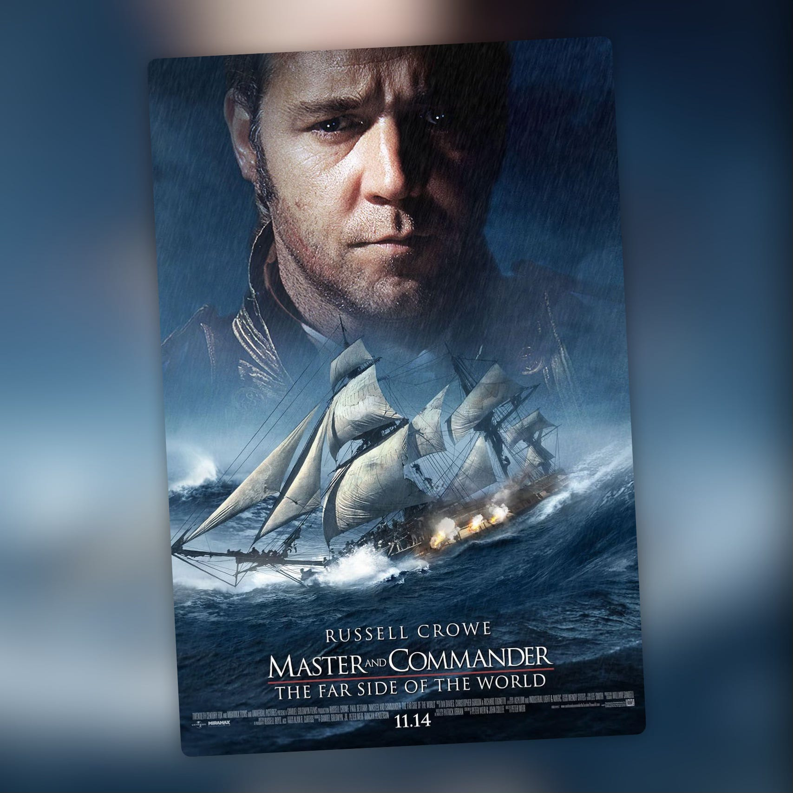

Master & Commander
Russell Crowe contra el Atlántico Sur. Spoiler: merece la pena.

Hay películas que te recuerdan que el cine de aventuras no necesita superpoderes ni universos compartidos para ser grande. Master & Commander es una de ellas, y encima parte de una base literaria de las que intimidan: la saga Aubrey-Maturin de Patrick O'Brian, veinte novelas largas y densas que Peter Weir decidió no adaptar de una en una sino mezclar, cogiendo situaciones, personajes y tramas de varios libros para construir algo que funciona solo como película sin traicionar el espíritu de la serie. Un ejercicio de síntesis que, visto el resultado, salió redondo.
La ambientación es brutal desde el fotograma uno. El sonido del barco, las maniobras, la vida cotidiana de la tripulación, el frío y la mugre del Atlántico Sur… todo se siente auténtico y trabajadísimo, como si Weir hubiera decidido que antes de emocionarte con nada, tenías que entender cómo funciona un navío de guerra del siglo XIX. Y funciona, ¿eh? Cuando llegan las batallas navales —rodadas con una tensión y una claridad que ya quisieran muchas películas de acción modernas, sin abusar de cortes rápidos ni artificios— cada enfrentamiento tiene peso, consecuencias y una fisicidad que se agradece enormemente. Nada de caos digital. Golpes de verdad.
Russell Crowe está muy convincente como el capitán Aubrey: firme, carismático, humano en los momentos justos. Pero si hay algo que eleva la película por encima del espectáculo puro es la relación con el personaje de Paul Bettany —el doctor Maturin, el contrapeso intelectual y humano que la historia necesita—. Sus escenas juntos son las más íntimas, las que le dan médula a todo. Sin él, Master & Commander sería una película de batallas muy buena. Con él, es otra cosa.
Si eres de los que disfrutan el cine que te mete de lleno en un mundo sin explicarte nada, que confía en que el espectador es capaz de seguir el ritmo, esta es para ti. Arranca fuerte y no suelta. Hay más movimiento y tensión de lo que muchos recuerdan, con enfrentamientos bien repartidos a lo largo del metraje que mantienen la intensidad sin perder coherencia. Es absorbente, emocionante y muy bien construida. El tipo de película que hoy no se hace, y que cuando la ves entiendes exactamente por qué se echa de menos. Y si encima te pica la curiosidad, tienes veinte novelas esperándote. Suerte con eso.
Ficha técnica
- Título original: Master and Commander: The Far Side of the World
- Dirigida por: Peter Weir
- Basada en: la saga Aubrey-Maturin, de Patrick O'Brian
- Reparto principal: Russell Crowe, Paul Bettany, James D'Arcy, Edward Woodall, Max Pirkis
- Año: 2003
- Duración: 138 min
- Dónde verla: Disney+